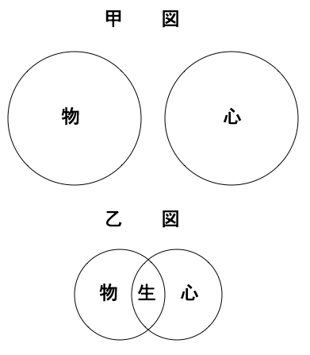
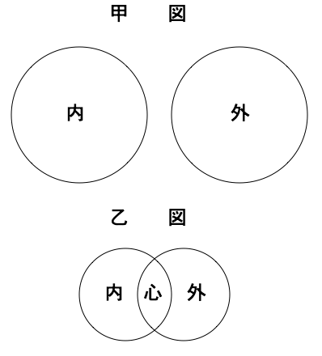
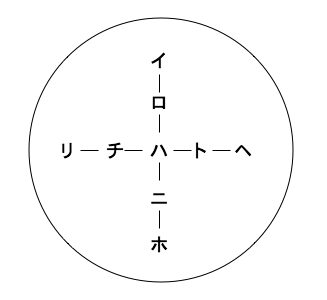
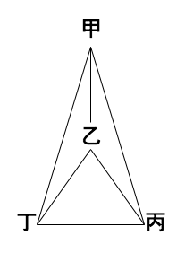

妖怪学は応用心理学の一部分として講述するものにして、これに「学」の字を付するも、決して一科完成せる学を義とするにあらず。ただ、妖怪の事実を収集して、これに心理学上の説明を与えんことを試むるに過ぎず。すなわち、心理学の学説を実際に応用して事実を説明し、もって心理考究の一助となすのみ。かくのごとく、妖怪の事実を考究説明して他日に至れば、あるいは一科独立の学となるも知るべからず。ゆえに、これを講述するは、哲学ならびに心理学研究に志ある者に、
しかりしこうして、余、いまだ妖怪の事実を究め尽くしたるにあらず、今日なお事実捜索中なれば、各事実について、いちいち説明を与うることあたわず。ただ、余が従来研究中、二、三の事実につき説明を与えしもの、あるいは雑誌、あるいは新聞、あるいは諸小冊子中に参見せるあり。今これを集録し、その部類を分かち、さらにその後研究したる事実を増補し、左に「妖怪学講義」として掲載することとなれり。読者、よろしく心理学講義の一部分とみなすべし。
［＃改ページ］
今、妖怪学を講述するに当たり、まずその意義を略解せざるべからず。余のいわゆる妖怪とは、いたって広き意味を有し、一切、妖怪不思議に属するものを総称するなり。およそ宇宙間の諸象の中に洋の東西を問わば、世の古今を論ぜず、普通の道理にて説明すべからず、一般の規則にて解釈すべからざるものあり。これを妖怪といい、あるいは不思議と称す。その種類、民間に存するものいくたあるを知らずといえども、これを大別すれば左の二種となる。
┌物理的妖怪
妖怪┤
└心理的妖怪
物理的妖怪とは、有形的物質の変化作用より生ずるものにして、心理的妖怪とは、無形的精神の変化作用より生ずるものをいう。妖怪┤
└心理的妖怪
今その一例を挙ぐれば、
┌物理学的妖怪（すなわち物理学の説明を要するもの）
│化学的妖怪（すなわち化学の説明を要するもの）
│天文学的妖怪（彗星 、流星のごとき天文に属するもの）
物理的妖怪┤
│地質学的妖怪（化石、結晶石のごとき地質に属するもの）
│動物学的妖怪（熱田の鶏の類）
└植物学的妖怪（下加茂の柊の類）
その他、人身の構造、機能上に関する妖怪は生理学に属する等の類、なお種々あるべし。つぎに、心理的妖怪にも、その種類はなはだ多し。これを分類するに、事実の上に考うる法と、これを説明する学科の上に考うる法との二様あるべし。│化学的妖怪（すなわち化学の説明を要するもの）
│天文学的妖怪（
物理的妖怪┤
│地質学的妖怪（化石、結晶石のごとき地質に属するもの）
│動物学的妖怪（熱田の鶏の類）
└植物学的妖怪（下加茂の柊の類）
まず、事実上の分類によるに、左の三種となるべし。
第一種、すなわち外界に現ずるもの
幽霊、狐狸 、天狗 、鬼神、その他諸怪物
第二種、すなわち他人の媒介によりて行うもの
第三種、すなわち自己の身心上に発するもの
夢、夜行、神感、神知、偶合、俗説、再生、妄想、癲狂 、その他諸精神病
そのうち、第一種の幽霊、狐狸等は、人身の外部に現存し、あるいは外界に現見するものにして、たとい精神作用より発するにもせよ、夢および巫覡等と異なるところあれば、しばらくその一種を別置するなり。第二種は、他人ありてわが心身の事情変化を考定審判するものにして、神を降ろす術、狐をつける法、人相、家相、九星、方位、右の表を、あるいは左のごとく分類すべし。
┌外界（幽霊、狐狸 等）
妖怪┤ ┌他人（巫覡 、神降ろし等）
└内界┤
└自身（夢、夜行等）
今、外界とはわが目前の物質世界をいい、内界とはわが体内の心性世界をいう。すなわち、夢、夜行等は心性の変動より生ずるはもちろん、巫覡、神降ろし等も心性の作用にほかならざれば、これを内界に属するなり。ただし幽霊のごときは、これまた心性作用の変態なること疑いなしといえども、その体の外界に現見するをもって、しばらく外界に属するなり。妖怪┤ ┌他人（
└内界┤
└自身（夢、夜行等）
以上数種の妖怪、その理由を説明する法、古今大いに異なるところあり。けだし、その異なるところあるは人の賢愚、時代によりて同じからざるによる。これを要するに、その説明の順序、三時代に分かつことを得べし。
まず、第一時代にては、人知いまだ無形の心を考うるに至らず。しかれども、多少知力の発達せるありて、種々の変化を説明せんとするに当たり、夢のごときに至りては、わが体ここにありて遠方の物を見、遠方のことを知るは、けだし、
つぎに第二時代の説明は、身心二元の関係を知り、心元は全く無形にして、有形の肉身と全くその性質を異にすることを知り、物心のほかに一種霊妙の神体ありて物心二者を支配するものと信じ、一切物心の変化は、その体の媒介または感通より生ずるものと考うるなり。これを鬼神交感説と名づく。この説によりて、一切妖怪に属する事実を説明せり。これ、重我説より一歩進みたるものなれども、いまだ今日の学説にあらず。ゆえに、そのつぎに第三時代ありて起こる。
第三時代は学術の時代にして、妖怪の原因を重我説に帰せず、鬼神説に帰せず、万有の理法、普通の規則に基づきて説明を与うるものなり。すなわち、物理学、化学、天文、地質、生理、心理の原理原則にその原因を帰するをいう。
以上の三時代、これを概言すれば左の三条となるべし。
第一は、万物各体の内に存する他体にその原因を帰すること
第二は、万物各体の外に存する鬼神にその原因を帰すること
第三は、天地自然の規則にその原因を帰すること
このうち第三時代の解釈法は、余がこれより試みんと欲するところのものにして、古来、人の妖怪不思議と称して道理の外に置きたるものを、道理以内に引き入れんことをもって、余が研究の目的とす。しかしてその説明法に、外界一方より起こる原因と、内界一方より起こる原因との二種あり。その一はさきにいわゆる物理的妖怪にして、その二は心理的妖怪なり。余はそのうち、ひとり心理的妖怪を説明せんとす。これ、余がさきに示すごとく、応用心理学の一部分として講述するによる。第二は、万物各体の外に存する鬼神にその原因を帰すること
第三は、天地自然の規則にその原因を帰すること
心理的妖怪は、我人の精神思想作用の上に現ずるものなれば、心理学のみにて解釈し尽くすべきがごとしといえども、これに数種類ありて、精神病によりて発するものは病理的妖怪と称し、生理学、精神病学の説明をまたざるべからず。また、宗教上に関し、あるいは形而上の問題に関するものは、宗教学および純正哲学の説明をからざるべからず。その他、社会学、人類学等の説明を要するものあるべし。今、概括してその種類を表示するときは左のごとし。
┌病理的（精神病に属するもの）
│迷信的（宗教上の迷信、妄想より生ずるもの）
心理的妖怪┤
│経験的（平常の経験上、事実の符合適中するの類）
└超理的（理外の理にして人知以外にありと想定するもの）
これ、余がさきに妖怪の分類に二種ありと述べたるうちにて、第二種の学科の上に考うる分類法と知るべし。すなわち、病理的妖怪は心理学のほかに生理学、病理学等によりて研究せざるべからず、超理的妖怪は純正哲学をまたざるべからず、迷信的、経験的はもっぱら心理学の研究を要するなり。│迷信的（宗教上の迷信、妄想より生ずるもの）
心理的妖怪┤
│経験的（平常の経験上、事実の符合適中するの類）
└超理的（理外の理にして人知以外にありと想定するもの）
およそ世間の人は、世界に理外の理ありと信じ、そのいわゆる理とは、人知以外にありて知力の及ばざるものをいう。すなわち超理的これなり。しかれども、超理的必ずしも人知以外に存するにあらず。もし、果たして人知のほかにあるときは、我人これを知るべき道理なし。いやしくも、その超理的たるを知れば、これまさしく人知以内にあるものなり。かつ超理的とは、わが感覚上接見することあたわざる事物の本体に名づくるものにして、その体もとより直接の経験によりて知るべからざるも、推理論究の方法によりて知ることを得べし。これ、純正哲学の起こるゆえんにして、その学の目的は全くこの理外の理を推究するにあり。もし、仮に人知以外の道理、真にありとするも、いずれより以上は理外にして、いずれより以下は理内なるや、その限界を定むることはなはだ難し。けだし、今日までの結果に考うるに、その間に一定の限界なきもののごとし。ゆえに、世間一般に理外の理なりと確信せるものも、我人は進みてその理のなんたるを考究せざるべからざるなり。
また世人は、一切の妖怪はみな理外の理なりという。このいわゆる理外とは、人知以外を義とするにあらずして、万有自然の規則に反するものを義とす。万有自然の規則とは、原因あれば必ず結果あり、結果あれば必ず原因ありというがごとき、必然の天則を意味するなり。この天則に反したる不必然のものを名づけて妖怪という。すなわち、余がさきに普通の道理をもって解釈すべからざるものと説きたるはこれなり。しかして、その実、全く解釈すべからざるにあらず、ただ世間にて解釈すべからざるものと信ずるのみ。今、妖怪を不必然となすも、これまた世間の説のみ。余の考うるところによるに、そのいわゆる妖怪は、みな普通の道理をもって説明すべきものと信ず。さきに、学術上の道理をもって説明すべしといえるものこれなり。これ、余が研究の目的とするところなれば、その説明は必ず世人一般の信ずるところのものと異なるべしといえども、
これによりてこれをみるに、宇宙間には唯一の因果必然の規則あることを知らざるべからず。しかして、その規則に反するものの世に存するを見るは、全くその研究の足らざるによる。昔時、理外の理、不必然の道理と想定せるものにして、今日学術の進むに従い、因果必然の理法なることを発見せるもの、幾種あるを知らず。昔日の妖怪にして今日の妖怪ならざるもの、その例はなはだ多し。これによりて将来を推すに、今日の妖怪のまた他日の妖怪にあらざるを知るべし。かつ、道理に必然と不必然との二種ありと許すも、いずれの点より不必然にして、いずれの点より必然なるや、一定の分界なきは明らかなり。果たしてしからば、余輩は宇宙間唯一の必然の天則のみ存せることを論定せざるべからず。これ、妖怪研究の起こるゆえんにして、かつ、学理にもとづきてその道理を考究するの必要なるゆえんなり。
かくのごとく論じきたるときは、余は世に全く妖怪なしと論定するもののごとし。しかるに余、あえて妖怪なしと断言するにあらず。ただ、余が妖怪となすものと、世人の妖怪となすものの、その種類を異にするのみ。けだし、世人はいやしくもその有するところの知力をもって説明しあたわざるものあるときは、これを一に妖怪となし、その妖怪の果たして妖怪なるやいなやを討究せず。しかるに余は、妖怪のなにをもって妖怪なるやを自ら問いて、自ら答えんとす。かくのごとく推究するときは、世間一般に妖怪なりと信ずるものは真の妖怪にあらずして、一般に妖怪にあらずとなすもの、かえって真の妖怪なることを発見すべし。しかして、その妖怪は絶対の大怪にして、その胎内に一切の妖怪も非妖怪も、みなこれを包有せるをもって、世間普通の種々雑多の妖怪は、妖怪の一分子、一元素にも足らざるものなり。果たしてしからば、その大妖怪はなにものなるや。
この精微至大の体、ひとたび動きて二象を現ず。その一はこれを心と名づけ、その二はこれを物と名づく。この二者互いに相接し相交わりて、その間に隠見するものは小妖怪に過ぎず。ゆえに、そのいわゆる小妖怪は、波石相激して、その間に白雪を躍らすがごとし。見る者誤り認めて白雪となすも、真の白雪にあらず。今、世人の一般に妖怪なりと信ずるもの、あたかもこの白雪のごとし。ゆえに余は、そのいわゆる妖怪は真の妖怪にあらずして、この妖怪を現出するものひとり真の妖怪なりという。もし我人、この真の妖怪を接見せんと欲せば、よろしくこの偽物妖怪を一掃して、半夜風波の静定するを待ち、良心の水底に真理の月影を観見せざるべからず。これ、我人の理想の真際に接触せるときなり。余は、この理想の本体を真の大妖怪というなり。もしまた、我人、外界にありて千万無量の物象を観察し去りて、その裏面に一貫せる理法の中心に洞達し、その実体いかんを想見するときは、また、この大妖怪に接触することを得べし。そもそもこの大妖怪は、物心相対の雲路の上にはるかに三十三天をしのぎ、
以上、総論を略述し終わりたれば、これより、二、三の種類を挙げて説明を試みんと欲す。しかしてその順序は、さきに列するところの分類によるべきは当然なるも、余が妖怪の研究はなおその途次にありて、いまだ究め尽くさざるところあれば、従来、多少説明を与えたりしものを左に掲載せんとす。その説、すでに他の雑誌上に見えたるものありといえども、今、さらにこれを補正増加して、段節を設けていちいち説明すべし。
狐狗狸はコックリととなえ、明治二十年ごろ民間に行われたりし一種の魔術体のものにして、余がかつて『哲学会雑誌』ならびに『妖怪玄談』第一集に掲載して、世上に示したるものなり。今、その要を摘載して説明を付すべし。まず、その使用法の大略を説示せんとす。当時、某氏の報知によるに、
（前略）その法、生竹の長さ一尺四寸五分なるもの三本を作り、緒 をもって中央にて三叉 に結成し、その上に飯櫃 の蓋 を載せ、三人おのおの三方より相向かいて座し、おのおの隻手 あるいは両手をもって櫃の蓋を緩くおさえ、そのうちの一人はしきりに反復、「狐狗狸様、狐狗狸様、御移り下され、御移り下され、さあさあ御移り、早く御移り下され」と祈念し、およそ十分間も祈念したるとき、「御移りになりましたらば、なにとぞ、甲某が方へ御傾き下され」といえば、蓋を載せたるまま、甲某が方へ傾くとともに、反対の竹足をあぐるなり。そのときは三人とも手を緩く浮かべ、蓋を離るること五分ほどとす。それより後は、三人のうちだれにても、種々のことを問うことを得べし。すなわち、「彼が年齢は何歳なるか、一傾を十年とし、乙某かまたは丙某が方へ御傾き下され」というとき、目的の人三十代なれば三傾し、五十代なれば五傾すべし。端数を問うにこれと同じく、ただ一年を一傾となすのみ。また、「あなたは甚句 おどりは御好きか御嫌いか、御好きならば左回りを御願い申します」といえば、好きなれば回転し、嫌いなれば依然たり。このときもまた手を浮かぶるなり。左右回りに代うるに御傾き何遍と望むも、あえて効なきにあらず、かえって効あり。その他、なんの数を問うも、なにごとをたずぬるも、知りたることは必ず答えあり。甚句おどり、かっぽれおどり、なににても好きなるものは、たとえ三人は素人なるも、三叉 足が芸人の調子に合わせておもしろくおどるべし。このときも手を緩く浮かぶるなり。傍観者にして伺いたきことあるときは、三人のうちへ申し願いすべし。また、傍観者自ら代わりておさえんとするも勝手次第なり。信仰薄きものは、たとえ三十分間おさえおるも移ることなく、男女三人なればよく移り、空気流通して精神を爽快ならしむる場所にては、移ること遅し。櫃 の蓋 の上に風呂敷を覆えば、なおよく移るなり。
その他、種々の仕方あれども大同小異なれば、そのつまびらかなるは『妖怪玄談』に譲り、これよりその説明を与うべし。まず、世人一般に考うるところによるに、コックリとは狐狗狸にして、余、この怪事の、あるいは愚民の固信するところとなりて、ために文明の進歩を害し、社会の不利を生ずることあらんことを恐れ、また、これに乗じてますます愚民を
余、はじめに、コックリのいずれの地にはじめて起こり、たれびとの発明せしものなるやを究めんと欲し、諸国の友人、同志にその流行のありさまの報知を請いたるに、余が手に得たる報知によれば、東海諸国に起こりしは明らかなり。しかるに、人の伝うるところによるに、この法は三百年前よりすでに日本に伝わり、信長公はじめてこれを用いたること、旧記中に見えたりといい、あるいは徳川氏の代にこれを行いたること、古老の伝うるところなりというものありて、本邦固有の法なるがごとく考うるものあれども、すでにして余、先年豆州に遊び、この怪事は下田港より起こり、アメリカ人の伝うるところなりということを聞き得たり。
明治十八年ごろ、アメリカの帆走船、下田近傍に至りて破損したるものあり。その破船のことに関して、アメリカ人中、久しくその地に滞在せしものありて、この法を近辺の者に伝えたりという。そのとき英語をもってその名を呼びたるも、その土地のもの英語を解せずして、その名の呼び難きをもって、コックリの名を与うるに至りたるなり。コックリとはコックリと傾くを義として、竹の上に載せたる
以上、コックリの伝来を述べたれば、これより、道理上その原因を説明せんと欲するなり。普通の人はその原因を考えて、これ
第一は、外界のみによりて起こる原因、すなわちコックリの装置自体より生ずる原因
第二は、内外両界の中間に起こる原因、すなわち人の手とコックリの装置と相触れたるときの事情より生ずる原因
第三は、内界のみにより起こる原因、すなわち人の精神作用より生ずる原因
このうち、第三の原因をもって最も大切なる原因とす。しかして、第一の原因は格別説明を要するほどのものにあらざれども、第一より第三に及ぼすはその順序よろしきをもって、まずはじめに第一の原因を述ぶべし。まず第一の原因は、コックリの装置すなわち三本の竹と
第二の原因は、内外両界の間に起こる原因にして、いかなるものも多少の時間、手を空中に浮かべて一物を支えんとするときは、必ず手に動揺を生ずるを見る。けだし、活動物はその一部分たりとも、永く静止して一点に保つことあたわざるものなり。また、衆人中一人くらいは手を静止することを得るも、衆人ことごとく同時に静止することあたわざるべし。もし、その中の一人、一寸手を動かせば、その動勢をコックリに伝え二寸動揺を示すべきは、装置の事情すでにしかるなり。これに他の人々の力の同時に加わることあるときは、またいくたの動揺を増すに至るべし。かつ、ひとたび回転したるものは、習慣性の規則に従ってますます回転せんとするの勢いあり。別して、衆人の力再三重ねてこれに加わることあるときは、数回小回転の後、著しき大回転を見るに至るべし。そのはなはだしきに至りては、ほかよりこれを抑止せんと欲するも、ほとんど抑止することあたわざるの勢いあるも、また自然の道理なり。かくして、手も身体もともに動揺するの習慣を生ずるに至れば、これを無意無心に任ずるも、自然に動揺するを見る。
これを要するに、第一に、人をして数分間その手を蓋の上に浮かべしむるときは、必ず疲労を生じて動揺せんとするの事情あり。第二に、その装置すでに動揺しやすき組み立てを有するをもって、これに
第三の原因は、コックリ様の説明を与うるに最も必要なる原因にして、これ、全く心性作用よりきたるものなり。今、余は便宜のために、この原因を内因と外情とに分かちて論ぜんと欲す。内因とは、人の心性、身体の性質より生ずるものをいい、外情とは、その心性作用を促すところの種々の事情をいうなり。まず、第一に内因を述ぶれば、主として不覚筋動と予期意向とによりて生ずるなり。今、この二者を知らんと欲せば、まず不覚作用につきて一言せざるべからず。不覚作用とは、人のその心に識覚することなくして発動するところの心性作用をいう。およそ、人に不覚作用の起こる原因に六事情あり。一は習慣より生じ、一は眠息より生じ、一は意向、一は激動、一は疲労、一は錯雑より生ずるなり。まず、その第一の起こるゆえんを述ぶるに、例えば、我が輩が詩歌を作ることを
以上の諸事情によりて、人に不覚作用を生ずるに至るなり。これにあまたの種類ありて、思想作用を覚せざることあり、感覚作用を覚せざることあり。例えば、夢中に思案工夫して自ら覚せざるは、その第一種に属し、火事場に自ら傷つきて苦痛を覚せざるは、その第二種に属し、歩行して自らその歩行するを覚せざるは、その第三種に属す。しかして、その思想作用の筋肉の上に発現して自らこれを識覚せざるもの、これをここに不覚筋動という。すなわち、コックリ作用の主原因なり。例えば、人すでにその心にコックリの回転すべきを知るをもって、その自ら思うところのもの、知らず識らず手の筋肉の上に発顕するをいう。他語にてこれを言えば、人おのおの自ら識覚せずして、その手をもって運動をコックリの上に与うるによる。しかして、その運動を生ずる原因は予期意向なり。予期意向とは、あらかじめかくあるべしと自ら期して、その一方に意を注ぐをいう。これ、いわゆるさきの意向によりて生ずるものなり。例えば、子供がその目前に菓子あるを見て、一念にこれを味わうべしと思うときは、知らず識らずその手を出だすに至り、また、人が音楽を聴きて、一心にこれを聴かんとするときは、知らず識らずその方に耳を傾くるに至り、また、浅草の奥山の見せ物などを見るときは、これを見るの一方に意を注ぐをもって、その足の次第に前に進み、その頭の次第に前に出ずるに至り、あるいはまた、ひとり幽室に間座して心に古人の詩を想するときは、知らずその句を口に発するに至るものなり。これみな、その心を注ぐところのもの、知らず識らず発して運動を現ずるに至るものにして、余のいわゆる予期意向より不覚筋動を生ずるの一種なり。
今、コックリの回転ももとよりこの理にほかならず、これを試むるものは大抵みな、あらかじめコックリの回転すべきを知り、また、その回転の人の問いに応答するを知るものなり。しかして、その知るところの思想、知らず識らず発現して筋肉の運動を起こし、ただにその回転の結果を見るのみならず、その回転のよく人の問いに答えて、事実を告ぐるの結果あるを見るに至るなり。例えば、人の年齢をコックリに向かって問うに、その答えあるは、これを問う人、あらかじめそのたずぬるところの年齢を知るによる。たとい明らかにこれを知らざるも、その大約を察知するによる。けだし、不覚筋動はただにその明らかに知るところのものより生ずるにあらず、その想像するところのもの、その推察するところのものより生ずるなり。しかれども、想像および推察は往々事実に合せざることあるをもって、コックリに向かって過去の事跡を問うときはたいてい事実に適中するも、将来の事情を問うときは適合せざるもの多しという。かつコックリの回転は、これを試むる人ことごとく不覚筋動を生ずるを要せず、その中の一人、この不覚筋動によりて回転の微力を与うるときは、他の人の力自然にこれに加わりて、次第に大運動を見るに至るは必然の理なり。けだし、コックリの仲間に婦人を一名加うれば速やかに回転するといい、信仰者一人これに加わればたやすく回転するというも、この理なり。
先年、豆州下田港にて、巡査数名相集まりてこれを試むるにその回転を見ず、さらに他の信仰者一名これに加わりて試みたるに、たちまち回転の結果を見るに至れり。その後、巡査のみにて試みたるも、ひとしく回転したりという。これ、そのとき巡査もすでに信仰心を起こしたるによる。信仰心とは、心のある一方に
つぎに、第二の外情より生ずるところの影響を述ぶるに、これ、予期意向を促すところの事情にして、他語にてこれを言えば、信仰心を起こさしむるの事情なり。例えば、種々の儀式を設け、装飾をなして丁重にこれを行うがごときは、いわゆる人の信仰心を促すものにして、あるいはその中の一人粛然として、コックリ様御移り下されと祈願するがごときは、大いに人の注意を引くものなり。その他、唱歌、音曲を設くるがごときもの、みな人の精神作用を促すものなり。
以上、この内因、外情と、外界の諸事情とによりて、コックリの回転を見るに至るなり。ただにその回転を見るに至るのみならず、これによりて未来を知り、吉凶を
棒寄せは、いずれの地に起こり、たれびとの発明せるところなるや。これを捜索するに由なしといえども、まずその使用法を見るに、五、六尺くらいの棒（竹にても木にてもよろし）、その直径およそ五分ないし一寸くらいのもの二本を取り、その一本は右の手の掌中に軽く握り、他の一本は左の手の掌中に軽く握り、そのこれを握りたるものをして、無意無心に両手を垂れて起立せしめ、棒をして身体の左右に平行せしむるなり。しかして、その目前におよそ五、六尺を離れて他の一人粛然として端座し、口中に
棒寄せの呪文は、人によりて同一ならざるがごとしといえども、ある者の伝うるところによるに、「ショウトクオウガキミニセカレテ」と申す語を用うるなり。けだし、その字「聖徳皇が君にせかれて」ということならんと察すれども、その意味解し難し。これ、棒寄せの呪文なり。もし、これを解かんとするときは、その句を反対に読めばよろしとのことなり。また、『
にない棒を二本、左右の手に一本ずつ、四本の指に真中を載せ、てんびんに持ちて立つなり。その棒の木口 に三の字を書いて、わが口の中にて「カエリコンズカエリコントハオモエドモ、サダメナキヨニサダメナケレバ」と三度読み、口の内にて「ヨレヨレ」といえば、棒の端が一所に寄ること奇妙なり。もし、寄りかぬるときはまた歌をよみ、手の指にて寄せるまねして「ヨレヨレ」といえば寄るなり。
これについて説を起こすものありて、棒の動揺するは手の疲労するによるというも、両方の前端相合するの理、いまだ解すべからず。また、別に説をなすものありて、前端相合するは手の筋肉の組織、生来しかるによるというも、これまた、ひとたび合するものの再び開くの理を解すべからず。けだし、一般に実験するところによるに、学者よりは不学、男子よりは婦人、大人よりは少年、不信仰者よりは信仰者に最もその効験ありという。これ、他に説明すべき原因ある一証なり。また、呪文のごときも、必ずしもその定められたる規則に従うを要せず。また、全く呪文を誦せざるもその効験あり。余、かつて今、その原因を考うるに、手の疲労および筋肉の組織は、多少その原因となることは疑いをいれずといえども、その原因の主たるものは精神作用にして、コックリと同じく、予期意向、不覚筋動これなり。すなわち、棒を握るものは、あらかじめその棒の相合するを信ずるをもって、その心に期するところ、自然にその作用を手の筋肉の上に発現するなり。しかして、自己はこれを信ずるの一点に心を
この棒寄せと同種類のものにて妖怪を招く法あり。その法は、児童五、六人相集まり、互いに手を取りて環状をなし、その中央に一人の童子を入れ、周囲にて手を振り躍り上がりつつ反復数回、左のごとく唱うるときは、妖怪その中央の童子に移りきたりて、童子は自然に周囲のものとともに躍り上がるに至るという。
青山、葉山、羽黒の権現ならびに豊川大明神、あとさきは言わずに中はくぼんだお釜 の神様
案ずるに、この語もとより妖怪を招くの力を有するにあらず。しかして、中央の童子の自然に相上がり相躍るは、その周囲のものの挙動を見て自ら感覚するところのもの、反射作用によりて運動神経の作用を促し、知らず識らずこれと同一の挙動を現ずるに至るなり。例えばここに十人ありて、その中の九人、同音同調にある一詩を朗吟するときは、その他の一人は知らず識らず微声を発して、これに手の先より細糸を引き出す秘法 俗間に伝わるところのいろいろの奇怪ある中に、糸引きの秘法と申すものあり。糸引きとは、身体のいろいろの部分より自然に細糸を引き出す法にして、ちょっと聞いても、ずいぶん奇怪千万のことのように思わる。すでに世間に宝物として遺存せるものの中に、糸引きの
しかるにまた、先年ある人の話に、東京府下駒込辺りのある信者の家に、念仏行者体のもの止宿して、
その手より出ずるところの細糸のことについて、余、先年ある寺に至り、糸引き名号を拝して、これを試みたることあり。また、不思議研究会において試験を行いたることありき。そのとき得たる糸は、その色白く、その長さは一、二分より五、六分くらいありて、太さは髪の毛より細く、あたかも日本紙を引き裂きたるときに、その裂き口に立ちたる細毛と同様なり。中に色の赤きもあり、また青きもあれども、たいてい白きを常とす。かくのごとき細毛の指端に立ちて動揺するを見て、これを世間にて糸の出ずるというなり。その状、あたかも小毛の肉中より生ずるがごとし。しかして、外よりこの毛に触るるときは、たやすくこれを取り離すことを得べし。そのとき、
第一に、六字名号とか、画像とか、木像とかを拝礼するときにのみ、細糸の生ずるにあらざるゆえんを試むるを必要なりとす。もし、たれびとにてもこれを試みんと欲せば、
これらの試験法によりて、余は先年、不思議研究会において、そのいわゆる細糸は、断じて空中に浮かぶところの塵毛なることを論定せり。かつ、その説の信拠すべき他の理由は、神仏に対して礼拝するときは、第一に、手を水にて清め、第二に、その手を静かに保ち、第三に、かくのごとき信仰家はたいてい婦人に多し、第四に、礼拝の時間はおよそ五分ないし十分間を用うるものなり。この四つの事情は、大いに空中の塵毛の手に触れてその皮膚面につくに、いたって便なるところの事情なるを知るべし。
まず第一に、手を清むるときは手に湿気を帯ぶるをもって、いたって塵毛の粘着しやすき事情あり。第二に、手を静かに保つときは、また塵毛の皮膚面にとどまりやすき事情あり。第三に、婦人はその手に油気を帯ぶるをもって、これまた粘着しやすき事情あり。かつ、ひとたびとどまりたるものは、たちまち飛び去らざるの事情あり。第四に、時間も五分ないし十分に至れば、空中にありふれたる塵毛中、やや長くかつ大なるものの、手面に触るるべき機会を得やすき事情あり。かつまた、人の伝うるところによるに、同じく礼拝するうちにても、男子よりは婦人、老人よりは少年に、糸の出ずること多しという。余、かつて自宅において、柱またはランプに対して、男女老少四、五人相集まりてこれを試みたることありしが、そのときも、果たして同一の結果を得たり。けだし、少年のものと婦人とは、手に油気を帯びて、塵毛の粘着しやすきによること明らかなり。
これによりてこれをみるに、その、いわゆる糸引きの秘法は、神仏の力にあらず、また身体の組織中より出ずる毛髪にあらず。すなわち、空中に散ずるところの塵毛中のやや長くしてかつ大なるものの、手の皮膚面に粘着してかかること疑いを入れざるなり。
マジナイ療法 余、マジナイの種類を集めたる小冊子を読み、その中に「小児の
（一）小児の疳の虫を取るマジナイ
この法は、晴天の巳 の時に、白胡麻 の油を手の甲、指、額に塗り、日輪に向かいて居 らしめ、手合わさしてわが口のうちにて、
この法は、晴天の
小松かきわけ出づる月その下かげにとるぞかんの虫
と読むべし。一時すぎて、白髪のようなる虫多く出ずるなり。目に入れぬようにただちにとるべし。
これ、その法の大略なり。先ごろ哲学館館外員、玉内某氏より寄せられたる書中に左の一項あり。よろしく参照すべし。
血気盛んなる小児の腹中に寄生する小虫を見る法なりとて、俗間に伝うるものを述ぶるに、小児の掌面に呪文 三回墨書し、さらにその上を墨にて塗抹 して文字をして不明ならしめ、これを握ること暫時にしてその手をひらき見れば、その爪甲 より毛ようのごとき白繊維のもの続々出ずるなり。これ、虫気の小児にありてしかるなりという。（下略）
以上はマジナイ療法とでも名づくべきものか。余は、その療法は断じて信仰療法の一種なりといわんとす。ただ、その信仰療法に属し難きは、毛ようの細虫の出ずるの一点にあり。しかるに、余が考うるところによるに、かくのごとき毛虫は真に存するものにあらず、ただ、世人誤り認めて毛虫となすのみ。いかなるものを毛虫となすか。曰く、空気中の
毛虫の塵毛なるべき理由は左のごとし。その療法中、白
その療法中に
その他、世間に伝わる種々のマジナイのうち、左にそのおもなるものを掲ぐ。
（二）歯のいたみをたちまちとむる呪術
その法は、桃の枝の東へむきたるをとり、楊子 にけずり、これにて痛む歯に「南」という字を三度かき、その歯にてくわえさせ、わが口のうちにて「アビラウンケンソワカ」と三度となうれば、たちまちいたみとまること奇妙なり。
（三）股 ずれをたちまち治する呪術
その法は、袖 の中へ生薑 を入れて歩くべし。ただちに治すること妙なり。薑の干 たるときは、また生なるに取り替えるべし。
（四）咽 に魚の骨たちたるをとる呪術
その法は、つるし柿を実 をとりてひしいで、歯にて食いきらぬようにかみて、一息にのむべし。抜けること妙なり。また、「左」の文字を杯の中へ書き、水にてとき、のむべし。抜けること妙なり。
（五）目に物の入りたるを出だす呪術
なににても目に物の入りたるときは、目をふさぎ「南無阿弥陀仏 」と三度唱え、「つ」をのむべし。出ずること奇妙なり。
（六）しゃっくりを落とす呪術
その人の舌の上に「水」という字を一字書きて、のますべし。奇妙に落つるなり。
また一法に、その人が「法性寺入道前関白太政大臣」といったら腹が立ったから、これから「法性寺入道前関白太政大臣様」といおうの――「法性寺入道前関白云云 」と呼気を切らずに三遍くり返しいうときは、落つるなり。
（七）やけどを治する呪術
「さる沢の池のほとりに有りけるがあじかの入道をふてこそ入れ」この歌を三遍よみ、やけどの所を口にて吹くまね三度して、また、そこを足にてふむまね三度すべし。あともなく治するなり。
（八）いぼの呪術
雷の鳴るとき外に出て、みごぼうきをもて三遍はきおとすまねをすれば消ゆるという。また、精霊 祭りに用いたるみそはぎをたくわえおきて、それにてなでたるもよしといえり。
（九）血どめの呪術
切りきずなどにて血出でて止まらざるときは、何草にても三品とり、わが手中にてもみ付くるなり。一草ごとに天にむかい手を合わせ、「朝日が下の三の葉草付くるととまる血がとまる、あびらうんけんそわか」と三度唱え、一草よりまたはじめのごとく唱えて一草とり、また唱えて一草とり、以上三草をもみて付くるときは、たちまち血とまること神のごとし。歌は一遍よみ、「あびら……」は三遍唱うるなり。
（一〇）痔疾 を治する呪術
茗荷 をとりて信心にいのり、一生茗荷を食すまじき願 をたつれば、奇妙にしるしあること神のごとし。
（一一）田虫の呪術
田虫の食いたる所へ「南」という字をかきて、上を墨にて塗る。奇妙にいゆるなり。また、半分にしたくば半分に「南」という字をかき、上を塗るなり。また、もとのごとく田虫おきたくば、「北」という字をかきて墨にて塗るべし。田虫、もとのごとく生ずるなり。
また一方に、小刀の先にて田虫の上に、「犬」という字をいくつも書くべし。あるいは白箸 をもって榎 へ取り移すまねを三度すれば、その木かぶれて、こちらの田虫消ゆという。
（一二）脚気の呪術
雪駄 の鉄を人通り繁き所の石垣のすき間へ、人の見しらぬようにかたく狭みおけば、必ずその験ありという。
（一三）小児、夜なきの呪術
小児、夜なきするときは、当人の臍 の下へ「田」の字を書きおけばやむという。
（一四）風を引かざる呪術
毎月朔日 の朝、梅干しを一つ茶に入れて食い、そのたねを口より紙の中に吐き出して、風のあたらぬように幾重も包みて、箱の内にしまいおくべし。果たして風を引かずという。また、手足の爪 をとるたびごとに、風を引きてくせのごとくなりたるには、男ならば、右の方の小指より薬指、中指、人差し指、大指と順にとり、その後、左の方も同じ次第に取るべし。女は、左の方の小指をはじめにして同様にすれば、風を引くうれいなし。これは、常に心掛くればできやすきことなれば、たとえ前条のくせなきも、この方を用いて爪をとるべきことなり。
（一五）船に酔わざる呪術
船に乗るときは、その河の水を一口のめば船に酔わぬなり。また、船に乗るときに、陸の土を少々紙に包み、臍 のうえにあてておけば、船に酔うことなし。
また一方に、付け木を二、三枚、人にしらせず懐中すれば船に酔わぬなり。
また一方に、船の中に「賦」の字を書き、「武」の点を人の額にうつべし。少しも酔わざること奇妙なり。また船は、かた足のりかけたるとき、「ながきよのとおのねむりのみなめざめなみのりふねのおとのよきかな」と三遍よみてのるべし。
（一六）駕籠 に酔わざる呪術
かごに酔う人は、駕籠の戸を開けて乗るべし。南天の葉を駕籠のうちに立て、それを見て乗れば、かごに酔うことなし。
以上は『その法は、桃の枝の東へむきたるをとり、
（三）
その法は、
（四）
その法は、つるし柿を
（五）目に物の入りたるを出だす呪術
なににても目に物の入りたるときは、目をふさぎ「
（六）しゃっくりを落とす呪術
その人の舌の上に「水」という字を一字書きて、のますべし。奇妙に落つるなり。
また一法に、その人が「法性寺入道前関白太政大臣」といったら腹が立ったから、これから「法性寺入道前関白太政大臣様」といおうの――「法性寺入道前関白
（七）やけどを治する呪術
「さる沢の池のほとりに有りけるがあじかの入道をふてこそ入れ」この歌を三遍よみ、やけどの所を口にて吹くまね三度して、また、そこを足にてふむまね三度すべし。あともなく治するなり。
（八）いぼの呪術
雷の鳴るとき外に出て、みごぼうきをもて三遍はきおとすまねをすれば消ゆるという。また、
（九）血どめの呪術
切りきずなどにて血出でて止まらざるときは、何草にても三品とり、わが手中にてもみ付くるなり。一草ごとに天にむかい手を合わせ、「朝日が下の三の葉草付くるととまる血がとまる、あびらうんけんそわか」と三度唱え、一草よりまたはじめのごとく唱えて一草とり、また唱えて一草とり、以上三草をもみて付くるときは、たちまち血とまること神のごとし。歌は一遍よみ、「あびら……」は三遍唱うるなり。
（一〇）
（一一）田虫の呪術
田虫の食いたる所へ「南」という字をかきて、上を墨にて塗る。奇妙にいゆるなり。また、半分にしたくば半分に「南」という字をかき、上を塗るなり。また、もとのごとく田虫おきたくば、「北」という字をかきて墨にて塗るべし。田虫、もとのごとく生ずるなり。
また一方に、小刀の先にて田虫の上に、「犬」という字をいくつも書くべし。あるいは白
（一二）脚気の呪術
（一三）小児、夜なきの呪術
小児、夜なきするときは、当人の
（一四）風を引かざる呪術
毎月
（一五）船に酔わざる呪術
船に乗るときは、その河の水を一口のめば船に酔わぬなり。また、船に乗るときに、陸の土を少々紙に包み、
また一方に、付け木を二、三枚、人にしらせず懐中すれば船に酔わぬなり。
また一方に、船の中に「賦」の字を書き、「武」の点を人の額にうつべし。少しも酔わざること奇妙なり。また船は、かた足のりかけたるとき、「ながきよのとおのねむりのみなめざめなみのりふねのおとのよきかな」と三遍よみてのるべし。
（一六）
かごに酔う人は、駕籠の戸を開けて乗るべし。南天の葉を駕籠のうちに立て、それを見て乗れば、かごに酔うことなし。
（一七）馬の船に乗らざるを心やすくのせる法
馬の額に「賦」の字を書き、旁 の「武」の字の点を船の中へすつべし。乗ること奇妙なり。
（一八）乗りたる馬つなぐ所なきとき、乗りはなし、つながずしてそこを動かぬ呪術
つなぐ所なきときは、「西東北や南にませさして中にたちたる駒ぞとどまる」この歌を三遍よむべし。とどまること奇妙なり。
右の法にてとどまりたる馬を歩まする法は、「西東北や南のませぬきて中に立ちたる駒ぞはなるる」この歌を三度よむべし。歩むこと奇妙なり。
（一九）人食い犬あるいは吠 えかかる犬を退くる法
その犬に向かい、「我は虎いかになくとも犬は犬獅子のはがみをおそれざらめや」とよみ、右の手の親指より、戌 、亥 、子 、丑 、寅 と指を折りてつよく握るなり。犬、恐れてにぐること奇妙なり。
これらは自己の身体上に関することにあらざれば、精神作用に関せざるもののごときも、その実、やはり精神作用より起こる。例えば、犬の一例にて知らるるごとく、犬は人の気込みに応ずるものにて、気を強く持つときは、犬の方にてこれを恐れ、気を弱く持つときは、犬の方にてこれに乗ずるものなり。ゆえに、人にして呪術を信ずるときは、犬を恐るるものもこれによりて気強くなり、犬の方にてかえってこれを恐れて避けのがるるなり。馬の例も、これに準じて知るべし。およそ獣類は無心なるも、多少、人の容貌、気風を見る力ありて、これによりてその挙動を変ずるは、その例はなはだ多し。ゆえに、以上挙ぐるところのものは、みな精神作用によりて起こるものと知るべし。馬の額に「賦」の字を書き、
（一八）乗りたる馬つなぐ所なきとき、乗りはなし、つながずしてそこを動かぬ呪術
つなぐ所なきときは、「西東北や南にませさして中にたちたる駒ぞとどまる」この歌を三遍よむべし。とどまること奇妙なり。
右の法にてとどまりたる馬を歩まする法は、「西東北や南のませぬきて中に立ちたる駒ぞはなるる」この歌を三度よむべし。歩むこと奇妙なり。
（一九）人食い犬あるいは
その犬に向かい、「我は虎いかになくとも犬は犬獅子のはがみをおそれざらめや」とよみ、右の手の親指より、
これと同一理にして、世間に用うる御札も、一つは人の心を安んじ精神を強くするによりて、多少効験もあるなり。例えば、年始に立春大吉の札を張り、方角悪きときはその方に四神之御札を張り、また、夜道に物恐れせぬために我是鬼の三字を書したるものを懐中にするか、またはこれを手に書きて固く握り、
しかるにまた、世間に左のごときマジナイあり。これ、精神に関係なきもののごとし。
（二〇）舟待ちせざる呪術
「ゆらのとをわたる舟人かぢをたえゆくへもしらぬ恋の道かな」の歌を唱うれば、舟待ちすることなしという。
（二一）旱魃 の際、雨を祈る法
その法は、「皇皇上天照臨下土集地之霊神降甘雨庶物群生咸得其所」（皇々たる上天、下土を照臨して、地の霊を集め、神は甘雨を降らし、庶物は群生して、みなその所を得）の文を唱うるなり。
（二二）霖雨 の節、晴れを祈る法
その法は、「天生五穀以養人民今天雨不止用傷五穀如何如何霊而不幸殺牲以賽神霊而則不止鳴鼓攻之朱緑縄索而脅之」（天は五穀を生じて、もって人民を養う。いま天、雨ふりてやまず。もって五穀を傷 る。いかんぞ、いかなる霊にして幸いせず。牲を殺して、もって賽神 す。霊には、すなわち鼓を鳴らすをやめず、これを攻むるに朱緑の縄索 もてす。しかしてこれを脅かす）の文を唱うるなり。
以上は、我人の精神作用に関係すべき理なきこと明らかなりといえども、また全く、偶然、暗合ばかりに帰すべからず。その雨を祈り晴れを祈るがごときは、大いに人の心を慰め、多少これによりて安心を営み、雨を待つに時日の長きをも、さほど意にせざることあるべし。これ、いわゆる精神作用なり。また、舟待ちするにも「ゆらのとをわたる舟人かぢをたえゆくへもしらぬ恋の道かな」の歌を唱うれば、舟待ちすることなしという。
（二一）
その法は、「皇皇上天照臨下土集地之霊神降甘雨庶物群生咸得其所」（皇々たる上天、下土を照臨して、地の霊を集め、神は甘雨を降らし、庶物は群生して、みなその所を得）の文を唱うるなり。
（二二）
その法は、「天生五穀以養人民今天雨不止用傷五穀如何如何霊而不幸殺牲以賽神霊而則不止鳴鼓攻之朱緑縄索而脅之」（天は五穀を生じて、もって人民を養う。いま天、雨ふりてやまず。もって五穀を
このことにつき、余が昨年哲学会にて演説したる、縁起、マジナイと、心性作用中連想との関係を一言せざるを得ず。およそマジナイが人の心を安んずるを得るは、思想連合の道理にもとづくもの多しとす。その説明は、すでに『哲学会雑誌』にのせて世に公にせるも、左にその一部分を抜粋節略し、かつこれに説明を付記すべし。
縁起、マジナイの類は、今日少しく学問あり、知識あり、事理を解するものの、一笑に付し去りて顧みざるところなりといえども、現に
まず、世間にて数につき、七、九、四などの数をいたく嫌忌するがごとし。昔時、江戸火消しの数に、いろは四十七字を用い、これが組を分かつに一、二、三の数によりたりしが、この一、二、三の名称を与うるにも、特に四と七との名称はこれを省きたり。一説にいう。これ、四はその音、死に通ずるがためなるべしという。また、いろは四十七文字中、火消しに、ら、へ、ひの三字を除けるは、音調上きたすところの連想のあしきによるなるべし。また、物を人に贈らんとするにも、二、三もしくは五、六をよしとすれども、四を忌む。これまた、四と死と音調の通ずるより起こりしことならん。また、婦人の厄年と称して人の大いに嫌うは、十九と三十三と四十九なり。これ、十九は「重苦」に通じ、四十九は「始終苦」もしくは「死重苦」に通ずるによるなるべし。三十三はいまだその理由を知らず。もとより、婦人はこれらの年齢に至るときは、経験上より、病気など多きことも知りたるなるべし。しかれども、これを十九、四十九などと限るは、けだし、これらの連合によること疑いなし。また世俗、
正月の用い物には、最もこの思想連合よりきたるもの多しとす。まず第一は
婚礼に関しては、かかること最も多しと思わる。すなわち、
かかる儀式のほかにも、かくのごとき類はなはだ多し。世間にて、人の頭に
また、文学、文章の上より起こる連想を挙ぐれば、さきのいわゆる祈雨祈晴の法、ならびに左に掲ぐる諸法を見て知るべし。すなわち、普通世間にて方角について吉凶を吟味するは人の知るところなるが、引っ越しの方角、家造りの方角等、いずれの方角にしても、知らず識らずあしき方角に当たることあり。かかるときはいかにすべきというに、これを避くる法は、「迷故三界常、悟故十方空、本来無東西、奈所有南北。」（迷うはもとより
古来、人に陰陽五行を配当して、その性質、気合を予定する法あり。例えば、男女相性のことにつき、男火性、女また火性なるときは大凶とす。なんとなれば、火に火を重ぬれば炎となる、炎は胸をこがすわけにて、夫婦相争ってやまざればなりという。また、男火性、女水性なるも大凶なり。なんとなれば、これまた水火相いれざればなり。また、天気を予知する法に、
その他、夢につきて、悪夢を見れば善事あり、善夢を見れば悪事ありということ、たれびとも知るところなるが、これ思うに、昼と夜とは反対のものなるより、昼のことは夜に反し、夜のことは昼に反すと想せしより出でしにはあらざるか。夢に歯の落ちしを見れば、必ず一人の死者ありというは、歯はよわいにして
また、世間に用うる符丁のごときも、この縁起、マジナイと一様のものなり。米屋の符丁は、一、二、三などの代わりに、「アキナイタカラブネ」の語を用う。すなわち、アは一、キは二、ないしブは八、ネは九なり。古着商の符丁は「フクハキタリメデタヤ」といい、茶屋の下女の符丁は「馬車デクル人マツテ居」なり。これみな、連想上、縁起を祝する意ならん。
これにつぎて、人名のごときもまた、これらの一種に過ぎざるを知るべし。世に、その名によき字を用うるは通常一般なれども、あしき字を選ぶものは、おそらくはなかるべし。例えば、福、吉、平、正、喜、嘉、忠、長、善などはよく用いらるる文字にして、なお、かく直接に意味を有せざるも、虎、亀などのごとく、間接に勇または寿などの意味をあらわす文字を使用するなり。また、留吉など呼ぶ「留」の字を名に用うるは、多くは、あまり子の多き人として、これにて子を生むことをとどめんとの意にて、子どめのマジナイなれば、この名は末子に多しとかいう。その他、相撲の類にても、
これを要するに、余が以上述べきたりし種々の例証は、世俗一般に縁起、マジナイ等と称して、神仏、不可思議力の所作と考うるところのものにして、これらは種々の原因により生じきたりたるものなれば、いまだそのよって出でし本源の不明なるもあり、または他の原因によるもあるべしといえども、その中の多くは思想連合の作用より生ずるものにして、音調、名称、その他種々類似の点より、その一つの心中に浮かびきたれば、他もまた伴随して現じきたるゆえ、死苦等のごとき、人のいたく嫌忌するところのものの伴い浮かぶときはこれを避け、よってもって一時を安心せしめんとするより出でしに過ぎずして、その他に深き理由あるにあらざるがごとし。
以上はマジナイと連想との関係を述べたるが、なおここに、マジナイと治療法との関係を一言せざることを得ず。すなわち、さきにいわゆる心理療法これなり。よって左にその療法の一項を掲げて、これより論述すべし。
この療法のことについては、余が先年、『哲学会雑誌』に「催眠術治療法」と題して論じたることあり。また、その当時の『講義録』にもこのことを論ぜり。今その一文を抜記し、かつ、余が意見を添えて、左に弁明せんとす。しかしてその弁明は、馬島東白氏の実験にかかる催眠術治療法より始めざるべからず。馬島氏、一日、余を
今、さらに医家療法の目的を案ずるに、その法、すでに損害したる部分を、あたかも物品、器具の損害を修繕するがごとく、新たにほかより補増してもとに復せしむるにあらず、ただ身体発達の自然の勢いに任ずるのみ。すなわち、人の身体はその自然の勢い、もとに復せんとするの性ありて、いったん損所をその一部分に生ずるも、これをその性に任じて他よりその発達に妨害を加えざれば、自然の勢い、そのもとに復するは必然なり。今、医家の療法は全くこの妨害を防ぎ、そのもとに復する自然の性を養成するにほかならず。かの薬石のごときも、ただその妨害を妨ぎ、その養成を促すの効力あるのみ。果たしてしからば、人の身体には損所その一部分に生ずるときは、自然の勢い、そのもとに復するの性ありて、医家の薬石、診断は、ただその性を養成するの方法を施すにほかならざるなり。しかるに、その性の妨害をなし、あるいはその性の養成を促すもの種々ありといえども、その最も主なるものは精神作用なり。さきにすでに述ぶるごとく、いかなる軽症少患といえども、身部の病は必ずその影響を心部の上に及ぼすをもって、精神作用の多少その病に加わるを免れず。世にいわゆる神経を起こすものこれなり。重症長病に至りては、精神作用のその上に加わること最も多きを見る。かくして、精神作用のこれに加わるに従い、ますますそのもとに復する自然の性を妨害して、ついに不治の病に陥らしむるは必然の勢いなり。しかして医家の療法は、全く精神作用よりきたるところの妨害を除くの法にあらざるをもって、重症難患に至りては、治することあたわざるもの多し。しかして、よくその不治の病を治するは、心部よりの療法を用うるよりほかなし。心部よりの療法は、精神作用の妨害を除き、かつその作用によりて、かえってそのもとに復する自然の性を養成するにあり。これ、心部よりの療法に催眠術を利用すべき理由なり。
そもそも催眠術は、その詳解に至りては、一、二言のよく尽くすところにあらざれば、ただここに、その術のよく心部よりの療法に利用すべきゆえんを略述すべし。けだし、催眠術は簡単にこれを解するに、人の精神作用を他方に引き去りて、暫時の間あたかも睡眠中のごとく、無意無心の境に住せしむるものなり。ひとたび無意無心の境に入れば、その前時に連続したる精神作用は一時休止して、その影響を身部の上に与えざるは必然なり。もしこのときに際し、人ありて治療をその上に施せば、全く精神作用の妨害を除きて、そのもとに復する自然の性を喚起することを得べし。かくして、いったん治療を施して醒覚の後に至れば、病者は大いにその心に爽快を感ずるはまた必然なり。ここにおいて、従来妨害をなしたる精神作用は、かえってその養成を助くるに至るべし。しかれども、暫時の後に至れば、また前時の精神再び起こりて、そのもとに復するの性を妨害するの傾向あるべし。ここにおいて、第二回の術を施して重ねてその性を養成し、およそかくのごとくすること五回、七回の多きに至れば、非常の治験を奏するに至るは必然の理なり。これ催眠術の、心部よりの治療に用いて効験あるゆえんの一斑なり。
この心部よりの療法は、医家の療法と大いに異なるところあるをもって、医家の療法中に加え難し。よって、さらに名称を下して、医家の療法を生理療法といい、この心部よりの療法を心理療法というを適当なりとす。なんとなれば、一つは生理学の規則に基づきて、身部の一方より人の病患を医するものなり、一つは心理学の規則に基づきて、心部の一方より人の病患を治するものなるによる。けだし、人は身心の両部より成り、その身部の構造機能を論究するの学、これを生理学といい、心部の性質作用を論究するの学、これを心理学という。さきにいわゆる精神作用とは、全くこの心理学に属するものなり。しかして、生理学は広く禽獣動物にも関する学なれども、心理学は主として人類に関する学なり。今、さらにこの二者の別を考うるに、普通の見解にては物心その体全く異にして、その二者接合して人身生体を生じ、その二者離散するに至れば死体となるという。その図、あたかも上のごとし。

甲図は物心相離れたる図にして、人の死したるときの状況なり。乙図は物心接合したる図にして、人の生時の状況なり。その図中、物生心の三あるは、物は外界の諸物をいい、生は生体の構造機能をいい、心は精神作用の本位をいう。しかして、人はこの生と心の二者より成る。さきにいわゆる身心二者これなり。しかして、この物を研究するの学、これを物理学といい、この生を研究するの学、これを生理学といい、この心を研究するの学、これを心理学という。これ、普通の見解なりし。もし学術上、物のほかに心なしといえる唯物的の論に考うるときは、人の心は神経の変化作用より生ずるものにして、その体すなわち物質なりという。かくのごとく解するときは、以上の図は左図のごとく変ぜざるを得ず。

この図中、内は有機身体中の内部の構造をいい、外は身体外の諸物諸象の森列せる外界をいう。人の死時にありては、甲図のごとく内部の構造が外界の事情に応合せざるときにして、生時にありては、乙図のごとく内部の構造と外界の事情と互いに応接感動して、一現象作用をその間に生ずるときなり。ゆえに、心はこの内外二者の接合の上に生ずるなり。しかして、内外二者ともにその体物質より成るをもって、これを唯物的の論と称す。しかしてその図中、内を論ずる学、これを生理学といい、外を論ずる学、これを物理学といい、その中間の心を論ずる学、これを心理学という。
以上示すごとく、唯物的の理論に考うるも、通俗的の見解によるも、生理、心理の両学あること明らかにして、人はこの生理、心理の二者に関すること、また瞭然たり。しかして、医家の療法は、ひとりこの生理学に基づきて人の身部の上に療法を施すものにして、馬島氏の治療法は、心理学に基づきて精神の上にその治療を施すものなり。これ、一つを生理療法といい、一つを心理療法と称するの適当なるゆえんなり。
かくして余は、催眠術治療法に与うるに心理療法の名称をもってし、その法の魔法にあらず、妖術にあらず、また、医家の療法と異なるゆえんを略弁せり。しかして、さらに顧みて心理療法に属するものを見るに、催眠術のほか、あまたの種類あるを見る。およそ心理療法は人の精神作用によるものにして、すなわち人の信仰をもととするものなり。例えば、人をしてその病の必ず平癒するを信ぜしむれば、精神作用の妨害を除きて、そのもとに復する自然の性を養成するをもって、治し難き病も治することを得べし。しかるに、この信仰によりて病を治する法は、古来、その例に乏しからず。かの神仏を念じ
┌内科
┌生理療法┤
│ └外科
│ ┌自信法
療法┤ ┌第一法┤
│ │ └他信法
│ ┌自療法 ┤
│ │ │ ┌自観法
└心理療法┤ └第二法┤
│ └他観法
└他療法
この表中、自療法とは自身の力にて療するものをいい、他療法とは他人の手を経て療するものをいう。今、催眠術治療法は、そのいわゆる他療法の一つなり。自療法には第一法、第二法の二種ありて、第一法中の自信法とは、自ら自身の病気の上に信仰を置き、この病は必ず平癒すべしと自ら信ずるものをいう。すなわち、病気を心頭にかけざるもの、薬石を用いずしてたやすく平癒するの類これなり。つぎに他信法とは、他体の上に信仰を置きて、自身の病はその力によりて必ず平癒すべしと信ずるものをいう。例えば、神仏を信ずるがごときこれなり。あるいは、医師の上に信仰を置き、医薬の上に信仰を置くときは平癒しやすきも、けだし、またこの類なり。つぎに第二法中、自観法とは、自ら自身の心を観念して、病死の懸念するに足らざるを究め明らかにして、精神の妨害を絶つをいう。すなわち、禅家の療法これなり。つぎに他観法とは、他の事物を観察して、病念、┌生理療法┤
│ └外科
│ ┌自信法
療法┤ ┌第一法┤
│ │ └他信法
│ ┌自療法 ┤
│ │ │ ┌自観法
└心理療法┤ └第二法┤
│ └他観法
└他療法
果たしてしからば、今後、心理療法を研究して、その諸法中の最も便益なる療法を発見するの必要なることを知らざるべからず。ゆえに、心理学を研究するものは、催眠術治療法のほかに、さらに他の良法を発見することをつとめざるべからず。かくして、心理療法をして生理療法に対立して一科の療法を組織するに至らしめば、その世間を益する、また必ず大なるべし。あに、心理療法は催眠術治療法のほかになしと断言するを得んや。
夢といえばたれびとも知らざるものなけれども、その説明に至りては知らざるもの必ず多からん。果たしてしからば、夢もまた妖怪の一種なり。しかして、心理学上、夢の説明を考うるは、大いにおもしろ味ある事項にして、他の妖怪の説明にも、大いに関係を有する問題なり。よって余は、左にその大要を説明すべし。
夢とは睡眠中、思想上に動揺発顕するものなり。そのほか、睡眠に発呈する一種の挙動あり。これ通常、夢といわざれども、夢と同一理にもとづくものなり。その挙動とは、睡眠中の言語、歩行をいう。通常、この挙動を夢行（また眠行、夜行）といい、これに対して夢を夢想という。今述ぶるところは、この夢想の一斑にとどむるなり。
夢とはなんぞやといえば、睡眠中あらわるる意識の作用なりと答え得れども、通常の意識とは大いに異にして、意力の支配を受けざる思想の作用なり。換言すれば、起動する思想を意力にて制限せず、ただ、自然に任じて連起するものをいう。ゆえに、自然作用の及ぶところ、いかなる間違いを生ずるも、自らこれを随意に制限することあたわず、ただ思想の連合にて起動するのみ。しかれども、夢中には全く意力を欠きたるやというについては、すこぶる議論のあることなり。かの、夢中に追わるることあれば逃げんとすることあるがごときは、意力の命令を下すに似たり。有意力論者はこれらの例証を主張すれども、無意力論者は曰く、「これは自然に思想の連合よりきたるのみ。別に意力の作用ありてしかるにあらず」と、無意力を可とするもの多きがごとし。しかして今、夢の起こるゆえんを説明せんとするに当たりては、睡眠のことより説明せざるべからず。
睡眠の起こりにも種々の議論あれども、生理学上の一説をいえば、脳髄に循環する血液の減ずるは、睡眠催起の原因なりという。しかれども、あるいは曰く、「血液の減少は結果なり。脳髄の作用減止するゆえに、血液循到せざるのみ」と。この二者のいずれが原因にして、いずれが結果なるやは論定し難しといえども、睡眠中血液の減少することは確然たるがごとし。しかるに、ある内外の刺激または他の事情にて、脳中の一部分起動すれば夢を起こすなり。もし、全分休止して意識作用の動かざるとき、これを熟睡という。しからば、夢と睡眠とはいくばくの差別ありやというに、夢も睡眠も死も、みなこれを心理学上よりみれば同一の現象のみ。脳髄および五官の神経等、有機組織の作用する間は醒覚のありさまなれども、睡眠中には脳髄および五官の神経等、大抵その作用を休む。ただ、反射作用は依然として動作す。かの肺、心、腸、胃等の作用これなり。ゆえに換言すれば、睡眠中は、反射作用は醒覚のときとさらに異ならざれども、意識作用は全く休止すというべし。しかして、意識作用も反対作用も、みなことごとく休止するに至れば死というなり。今、試みにその別を左に表示すべし。
反射作用 意識作用
醒覚 有 有
夢 有 一部分
熟睡 有 無
死 無 無
醒覚 有 有
夢 有 一部分
熟睡 有 無
死 無 無
夢を催起する原因事情は、第一、五官の感覚すなわち外覚なり。目を刺激し、耳を刺激し、手足を刺激することあれば、ただちに脳部にその刺激を及ぼして夢を結ぶに至る。古来、その例証に乏しからず。今、一、二を挙ぐれば左のごとし。
ある貴人が一夕、兵隊となりたる夢を見、たまたま砲声を発するを聞きて驚きさむれば、そのとき隣室中に、不意に発声するものありて夢を引き起こし、かつ、眠りを驚かせしなり。これ、耳感にありて夢を生ぜし一例なり。
ある人、睡眠中にその弟来たりて談話したることあり。しかるにその人、睡眠中にありながら、その談話と寸分も違わざる夢を結びたりという。これまた耳感の夢なり。
ある人、睡眠中ガスの気を嗅 ぎて、化学実験室に入りたる夢を結びしという。これ、鼻感の夢なり。
触感の夢には、その例はなはだ多し。例えば、湯を入れたる鉄瓶 に足の触るるありて、火上を渡りし夢を結び、冷水を入れたる鉄瓶に足の触るるありて、氷雪を踏みし夢を結ぶ等なり。
また、視感によりて夢を結ぶことあり。ある人、夢に極楽に遊び、四面光明赫々 たるを見、驚きさむれば、炉中に薪 の突然火を発するを見たり。また、ある人、夢に盗賊の室中に入りて、手に燭 を取り物品を探るを見、翌朝これをその母に語る。母曰く、「これ、わが前夜ろうそくを取りて室中に入り、物品を探りしことの、夢に現ぜしならん」
また、ある人、ことさらに試験を施せしことあり。一夕、熟眠せる人の手足を爪にてひねりたるに、その人は医者の手術を受けたる夢を見たり。また一夕、熟眠せる人の額に冷水の一滴を点じたるに、その人、イタリア国にありて熱気のはなはだしきを感じ、ブドウ酒一杯を傾けたることを夢みたりという。
明治二十年、和歌山県久保某氏より報知せる書中に、左の一事あり。久保氏自ら曰く、「一夕、夢中にて余の傍らにある人、棒をふりまわす。余、その棒の己が身体にあたるを恐れしに、やや久しくして、果たして余の頭にあたれり。よって驚きさむれば、たまたま余の傍らに臥 したる人が手を伸ばして、あやまりて余の頭に触れたるなり」と。
夢を結ばしむる第二の原因は、内部の感覚すなわち腸胃等の感覚より起こること多し。例えば、就眠の前に飲食すれば苦しき夢を結び、不消化物を食せしときもまた同じ。その他、血液の運行、熱度の矩合等にて夢を生ずること多し。また、夢にて疾病を予知することあり。例えば、いまだなんの現象なきにある人、睡眠中にその弟来たりて談話したることあり。しかるにその人、睡眠中にありながら、その談話と寸分も違わざる夢を結びたりという。これまた耳感の夢なり。
ある人、睡眠中ガスの気を
触感の夢には、その例はなはだ多し。例えば、湯を入れたる
また、視感によりて夢を結ぶことあり。ある人、夢に極楽に遊び、四面光明
また、ある人、ことさらに試験を施せしことあり。一夕、熟眠せる人の手足を爪にてひねりたるに、その人は医者の手術を受けたる夢を見たり。また一夕、熟眠せる人の額に冷水の一滴を点じたるに、その人、イタリア国にありて熱気のはなはだしきを感じ、ブドウ酒一杯を傾けたることを夢みたりという。
明治二十年、和歌山県久保某氏より報知せる書中に、左の一事あり。久保氏自ら曰く、「一夕、夢中にて余の傍らにある人、棒をふりまわす。余、その棒の己が身体にあたるを恐れしに、やや久しくして、果たして余の頭にあたれり。よって驚きさむれば、たまたま余の傍らに
以上は、内覚および外覚より起こる夢の事情なり。しかれども、夢の起こるはただにこれのみならず、脳の内部の事情にて起こることあり。この事情はいちいち知ることを得ざれども、血液の分量、通例より多く脳中に入りて刺激すれば夢を結び、また、血液の成分および熱度に関係すること多し。その他、昼間、困難なることに脳髄を使用するか、あるいは配慮すること多ければ、夜間、結夢の原因となるものなり。
夢想の起こることは略説したり。夢行も、その理さらに異なることなし。熟眠のときは五官神経もみなことごとく休息すれども、その一部分醒覚して、他はいまだ熟眠せざることあり。
以上は、夢の起こる原因なれども、夢の中には空間の大小、時間の長短を知ることあたわず。重ねたる足の落ちたるは、わずかに寸秒の間なり。しかれども、夢中には橋を渡りて落つるなど、すこぶる長時の考えをなす。その他、いにしえを今とし、今をいにしえとし、わずか一夜のうちに数十年の経歴をなすことあり。また、遠を近とし近を遠とし、小を大とし大を小とする等、実際とはなはだしく懸絶すること通常なり。また、夢の作用は全体不十分なるものなれども、醒覚のときよりかえって十分なることあり。夢中に詩を作り文を解し、裁判の判決を考定し、数学の難問を解説することあり。その他、後日のことを前知し、遠方のことを予知すること珍しからず。これらは夢の変状なり。これより、その理由を講述すべし。
今、この説明を与うるに当たり、まず余が先年、熱海温泉にありて経験したる百種の夢を掲げて、その原因を考究すること肝要なり。このことは余、先年、哲学会において演説し、またこれを当時の『哲学会雑誌』に掲載したるも、今ここにその項目を挙ぐること必要なれば、左にその分析表を掲示すべし。
この夢は、明治二十年十二月二十三日夜より二十一年三月七日夜まで、七十六日間に夢みしところのものなり。
余は初めてこれを試むるに当たり、毎朝醒覚の後、その記憶せしところのものを集めんとせしも、十中八九は失念して再現すること難きを知りたれば、毎夜筆紙を枕頭に置き、わずかに醒覚することあれば、ただちにその夢みしものを記載して、七十余日間に百夢を得たるなり。
その夢の種類を分析するに、左表のごとき結果を得たり。
余は初めてこれを試むるに当たり、毎朝醒覚の後、その記憶せしところのものを集めんとせしも、十中八九は失念して再現すること難きを知りたれば、毎夜筆紙を枕頭に置き、わずかに醒覚することあれば、ただちにその夢みしものを記載して、七十余日間に百夢を得たるなり。
その夢の種類を分析するに、左表のごとき結果を得たり。
学問および事務上に関したる夢 十種
旅行に関したる夢 十二種
遊歩に関したる夢 十八種
病気に関したる夢 九種
訪問に関したる夢 十六種
世間のありさまおよび出来事に関したる夢 九種
会合および饗応に関したる夢 十三種
妖怪に関したる夢 二種
遊戯に関したる夢 六種
葬祭に関したる夢 五種
旅行に関したる夢 十二種
遊歩に関したる夢 十八種
病気に関したる夢 九種
訪問に関したる夢 十六種
世間のありさまおよび出来事に関したる夢 九種
会合および饗応に関したる夢 十三種
妖怪に関したる夢 二種
遊戯に関したる夢 六種
葬祭に関したる夢 五種
この表について考うるに、平常経験したること、および近く経験したること、その他、平常心頭にかけたることは、夢中に現ずる割合多きを見る。すなわち、熱海にありては毎日野外に遊歩したるをもって、遊歩の夢その割合最も多く、訪問、会合、旅行、またその割合多きにおれり。しかして病気の夢、これを他種の夢に比するに、その割合やや多きは、当時、病気療養のためその地にありて、多少懸念するところありしによる。もし強壮の人なれば、病気の夢決してかくのごとく多からざるなり。つぎに、その夢を夢中見るところの場所について分析するに、左表のごとき結果を得るなり。
東京にありし夢 四十二種（うち八種は大学にありしときの夢なり）
郷里にありし夢 十五種
西京にありし夢 二種
熱海にありし夢 十四種（うち七種は帰京の後の夢なり）
他の地方にありし夢 十種
諸方混同したるもの 四種
場所の不分明なるもの 五種
場所に関係なきもの 八種
郷里にありし夢 十五種
西京にありし夢 二種
熱海にありし夢 十四種（うち七種は帰京の後の夢なり）
他の地方にありし夢 十種
諸方混同したるもの 四種
場所の不分明なるもの 五種
場所に関係なきもの 八種
この表について考うるに、その経験の近くしてかつ多き場所は、夢中に現ずること多きを見るべし。けだし、余の生活はこれを概算するに、生まれてより今日まで、その三分二は郷里および西京に住し、三分一は東京に住せり。西京に住せし年月は一年未満なり。ゆえに、東京の夢最も多きはずなり。しかして熱海の夢は、熱海にある間は現ずること少なく、帰京後かえって多し。これ他なし、帰京の後は熱海の浴遊を回想すること、かえって切なればなり。
つぎに、夢の起こりし原因を考うるに、五官および身体組織間の感覚より生ずるもの七種あり。うち一種は聴感より生じ、他の六種は内臓および筋肉間の感覚より生じたるなり。その他の九十三種はその原因明らかならざるも、脳中の事情によりて生ぜしは疑いをいれず。しかして、夢の前日中に経験したるものを見ること最も多きがごとし。今、これを時間について分析するときは、左表のごとき結果を得るなり。
つぎに、夢の起こりし原因を考うるに、五官および身体組織間の感覚より生ずるもの七種あり。うち一種は聴感より生じ、他の六種は内臓および筋肉間の感覚より生じたるなり。その他の九十三種はその原因明らかならざるも、脳中の事情によりて生ぜしは疑いをいれず。しかして、夢の前日中に経験したるものを見ること最も多きがごとし。今、これを時間について分析するときは、左表のごとき結果を得るなり。
前日中に経験したるものの夢 十二種
二日前ないし一月前に経験したるものの夢 十八種
一月前ないし一年前もしくは十年前に経験したるものの夢 二十七種
平常思想中に存せしもの、および想像上に存せしものの夢 二十五種
想像上に存せず経験上に現ぜざりしものの夢 十一種
二日前ないし一月前に経験したるものの夢 十八種
一月前ないし一年前もしくは十年前に経験したるものの夢 二十七種
平常思想中に存せしもの、および想像上に存せしものの夢 二十五種
想像上に存せず経験上に現ぜざりしものの夢 十一種
これによりてこれをみるに、平常思想中に存せしもの、および近く経験したりしものは、夢中に現ずること多きを知るべし。
その他、この夢について記すべきことは、第一に、腸胃の悪きときと発熱のうちに夢を現ずること最も多きこと、第二に、夢と夢との間に数日を隔てて連絡あること、第三に、恐ろしき夢は、たいてい身体中のある部分に、不快もしくは苦痛の感覚あるときに生ずること、第四に、夢中に時間、空間の精密なる配置、連続なきこと、第五に、夢想と事実との間に大いなる相違あること等なり。しかれども、これらはみな人の経験するところなれば、いちいちその例を挙ぐるを要せざるなり。
その他、この夢について記すべきことは、第一に、腸胃の悪きときと発熱のうちに夢を現ずること最も多きこと、第二に、夢と夢との間に数日を隔てて連絡あること、第三に、恐ろしき夢は、たいてい身体中のある部分に、不快もしくは苦痛の感覚あるときに生ずること、第四に、夢中に時間、空間の精密なる配置、連続なきこと、第五に、夢想と事実との間に大いなる相違あること等なり。しかれども、これらはみな人の経験するところなれば、いちいちその例を挙ぐるを要せざるなり。
これより、さらに進みて夢中の状態を考うるに、時間の長短、空間の遠近等、夢中にありて明らかに知ることあたわざるゆえんは、まず夢は、一部分の意識作用によりて起こるゆえんの理を推して知ることを得べし。およそ時間の記憶およびその長短を識別する力は、脳中の諸記憶の比較対照より起こらざるはなし。例えば、上図のごとく、イロハニホの五種の事実が時間の前後に応じて、脳中の記憶を形成せるものと仮定し、イの事実は五年前に起こり、ロは四年前、ハは三年前、ニは二年前、ホは一年前に起こりたるものと仮想してこれを論ずるに、脳中の全部分醒覚するときに限りて、前後を対照してその新旧を判知することを得べし。しかるに、もし夢中にありてイロのみ醒覚し、ハニホ眠息するときは、その四、五年前に起こりたる事実は、あたかも今年、近時に起こりたるもののごとく想見すべし。また、イとホとの二個の記憶醒覚して、ロハニの三個の記憶、夢中にありて眠息するうちは、イとホとの間に数年を隔てたるに、あたかも同年中に起こりたるがごとく感見するなり。故をもって、夢中にありては、死したる人を現に世にあるもののごとく感見することあり、また、数年前に見聞したるものを、今日今時に見聞したるがごとく感見することあり。これ、諸記憶の比較対照を失うによるのみ。例えば、人の生時の記憶のみ醒覚して死時の記憶眠息するときは、その人は現に世にあるもののごとく感見するなり。
つぎに空間上、距離の遠近の夢中にありて相混ずるゆえんも、同一理について知ることを得べし。例えば前図について、ヘトハチリの五種の場所、わが記憶中にありて存するものと仮定するに、ヘとリとはその距離最も遠きも、トハチの記憶眠息して、その間に距離を対較すべきものを見ざるときは、この二者あたかも接近して存するもののごとく感見するなり。
およそ夢中に現見するものの事実に合せざること多きは、みな脳中の一部分醒覚して一部分眠息せるによる。しかして、一夢さめきたれば全部分活動するをもって、一部分の想像の全く
塵事堆中日月移 秋来未有一篇詩
却思去歳○○○ 載酒孤舟棹月時
（塵事堆中日月移る 秋きたりいまだ一編の詩あらず
かえって思う去歳○○○ 酒を載せて孤舟月に棹 さすとき）
転句の○○○は、夢さめて失念したるものなりという。その他、夢中新発明をなしたるがごときは、多くその例を見るところなり。今、左にその説明を与えん。却思去歳○○○ 載酒孤舟棹月時
（塵事堆中日月移る 秋きたりいまだ一編の詩あらず
かえって思う去歳○○○ 酒を載せて孤舟月に

およそ我人の思想は互いに連合して複雑なる思想を団成し、一思想起これば、必ず他の思想のこれに伴って起こるを見る。これを思想の連合と名づく。例えば、上図のごとく甲乙丙丁四個の思想ありと想定するに、各個互いに相連結して一団の虚想を形成するなり。そのうち、甲想起これば、丙丁もしくは乙想伴って起こり、乙想起これば、甲丙丁相つぎて起こる。しかして、ここに甲想起こりて、その連合より丁想に伴起せしめんとするも、丙乙二想の甲と連合する力いたって強くして、その影響のために丁の連起を妨ぐることあり。これ、各個連合の力に強弱の差あるによる。すなわち、甲丁の連合の力弱くして、甲乙および甲丙の連合の力強きによる。これ平常、我人の記憶の再起に難易の別あるゆえんなり。例えば、だれにても、その友人に同姓の人三名ありと仮定するに、その一人は毎日面接する人にして、つぎの一人は一年に一度ぐらい面接する人なり。しかして、他の一人は五、六年来さらに面会したることなし。今、便宜のために、その第一の友人を木村松太郎とし、第二を木村竹蔵とし、第三を木村梅吉とするに、木村を思うごとに、その毎日面接する松太郎はただちに想出し得るも、毎年一回ぐらい面接する竹蔵の方はただちに想出すること難し。しかれども、注意を用うれば想出し得るも、第三の梅吉に至りては久しく面会せざるをもって、百方注意を用うるも想出することあたわず、ほとんど記憶上に消失したるもののごとく覚ゆることあり。これ、全く失念したるにあらざるも、久しく面会せざるをもって、その名と姓との連合力の弱くなりたる結果にほかならず。
この例を図中に配当するときは、甲は木村なり、丙は松太郎なり、乙は竹蔵なり、丁は梅吉なり。この三者の連合力は甲丙最も強く、甲乙これに次ぎ、甲丁最も弱きをもって、甲を想すれば丙最も速やかにこれに伴って想起し、丁は容易に想起すべからざるも、もし甲丙ならびに甲乙の連合が、ある事情によりて、その作用を休止し、あるいはその作用を現示することあたわずとせんか。しかるときは、甲を想してただちに丁を想出することを得べし。これ他なし、甲丁の連合力はこれより一層強き甲丙、甲乙の連合力によりて妨げられて、その想起を呈することあたわざりしも、その強き方の作用休止して、単にその弱き方のみ作用を発呈せんとするによる。例えば、木村と松太郎および竹蔵との連合その作用を休止して、わが注意ただ木村と梅吉との一点に会向するときは、そのひとたび失念したりと信ぜしものも再起し得るに至るべし。さらに、他の例によりてこれを証明するに、甲の場所に水を蓄えてこれを丁の方に流さんとするに、甲丁の路線より甲丙および甲乙の両路線の方、その地面やや低下せるをもって、水を引く力一層強きがゆえに、甲にある水は、丁に向かわずして丙もしくは乙に向かうは当然なるも、もし甲丙、甲乙両路線ふさがりて水を通ぜざるときは、水勢、単に丁に向かって進まざるを得ざる道理と同一理なり。
すでにかくのごとく仮定して、これよりその説明を試むるに、夢中にありては脳中の一部分休止して、一部分発動するものなれば、甲丙、甲乙の両連合の部分休止して、甲丁の一部分のみ発動することあるべし。しかるときは、醒覚のとき想出すべからざりし甲丁の記憶が、夢中にありて想出し得るも当然のことなり。あえて怪しむに足らんや。これ、人の醒時に失念したる人の姓名、文字の解釈等の、夢中に想出することあるゆえんなり。すでにしかるゆえんを知るときは、夢中に新工夫、新発明をなすの理も了解することを得べし。およそ人は、醒時にありては、一方へ思想を会注すること難し。甲丁に向かいて思想を集めんとするも、甲丙および甲乙のこれを妨ぐるありて意のごとくならず、目前に色を見れば、その方に注意を引かれ、耳外に声を聴けば、その方に精神を移し、思想を一点に集むること難きをもって、したがって発明、工夫をなすこと難し。ゆえに、人もしその心に難問を解答せんとし、あるいは失忘したる記憶をつとめて再起せんとするときは、両眼を閉じて黙思するを通慣とす。盲人の思考力に長じ記憶に強きも、これと同一理なり。これみな、思想を一点に集むることを得るによる。果たしてしからば、夢中のごときは、脳中の一小部分発動して、他の大部分休止せるをもって、かえって思想を一部分に集めて、新工夫、新発明をなすに便ならしむ。もし、全脳の力は夢中にありては一点に集むることあたわざるも、他の連想のその発明をなすに妨害となるもの休止せるをもって、大いに新工夫をなすに便宜を得せしむるなり。
けだし、夢中は自然に不要の思想の連起を防ぎて、必要の思想の連起を促すことを得るをもって、発明、工夫に便なるのみならず、数学の問題を解答し、文章の難意を解説する等の不思議を生ずるなり。しかして、その実、決して不思議なるにあらざるは、以上の理に照らして知るべし。しかれども、夢中は必ずしも新工夫をなすに便なるにあらず。夢中の作用は脳中の一部分なるをもって、我人が夢境にありて完成せりと想するものの、夢さめて、その大いに欠点、
つぎに、夢中の不思議ととなうるものは偶合暗中の一事なり。例えば、百里以外のことを夢中に見、十年以後のことを夢中に知るの類これなり。これ、世間に多くその例あるを聞くところにして、いまだ全く妄説に帰すべからず。今、さらに二、三の例を挙ぐれば、一夜、父母の病気およびその死亡を夢中に見て、翌朝、数百里隔たりたる郷里へ問い合わせて、その実を得たるがごとき、あるいは翌朝郷里よりの音信に接し、その夢と暗合したるがごとき、あるいは一夜、来年火災もしくは震災あることを夢みて、果たしてその年に災難ありというがごときこれなり。
かくのごとき事実は真の不思議というべきものなるも、余、左に偶合論を述べて、その不思議の起こる理由の一端を説明すべし。
偶合論とは、偶然に暗合する事実の理由を説明するものなり。しかして、偶然の暗合とは、東京にありて起こりたる事実と、九州あるいは北海道にありて起こりたる事実と暗合し、数十年前に想定したる予言の、今日にその事実を見るがごときをいう。余はこの説明を与うるにさきだち、偶然のなんたるを解釈せんとす。
およそ事実の起こるに三種の関係あり。その一を偶然といい、二を
以上、偶然の解釈を与えたるをもって、これ、偶合の理を説明せざるべからず。およそ偶合に左の二種あり。
（一）空間上の偶合（遠方）
（二）時間上の偶合（未来）
空間上の偶合は、百里千里を隔つる遠方のことを知るをいう。すなわち、夢中に想見したることと、千里以外に起これる事実と暗合するがごときこれなり。余が知人に、夢に数十里隔つる父母の死を見て、その実に合したることあり。つぎに時間上の偶合は、未来の予言のその実に合したることをいう。予言者の未然を前定するがごときこれなり。余が郷里に、夢に翌年五月死すべしと神告ありしを見て、これを怪しみおりしが、果たして翌年五月に至り死去せり。これ、夢中に起これる時間上の偶合なり。そもそもこの二種の偶合の起こるは、古来一般に神仙の感通に帰したるも、今日に至りてこれを見るに、いまだ断言して神仏に帰すべからざるものあり。もし、果たして神仏の感通とするも、その理由いまだ明らかならざる以上は、神仏のなにものにして、その感通のなんたるを論究せざるべからず。また、空間上の偶合のごとき、世間これを動物電気もしくはエーテルの媒介に帰するものあれども、これまた空想にほかならず。もし、これを電気に帰せず神仏に帰せざるときは、必然の規則に考えざるべからず。およそ偶合の起こるには、必ず多少の事情あり、また多少の理由あり、いまだ全く理由、事情なくして起こるものあらず。ゆえにこれより、偶合のよって起こる事情を考えんとす。その一例に、天気の予定に関する事情を述べざるべからず。まず、通俗に伝うるところによるに、夜半に晴れわたりたる天気は永持ちせぬといい、月に（二）時間上の偶合（未来）
夢見るは雨と日和の二つなり変らぬ時に見るはまれなり
鳥の声すみてかるきは日和なりおもく濁るを雨気とそ知る
小便のしけきは日和のむ水の腹にたもつを雨と知るへし
のみや蚊 のきわめてしけく喰 ならは雨のあかりと雨気つくころ
香の火の何よりはやくたちぬるは雨のあかりと雨気つくころ
ね心のあしき夜ならは雨としれさてはぬす人ゆたんはしすな
俗に寒割ととなうるものありて、寒中三十日間の天気を見て、一年中の晴雨、豊凶を前定するなり。また、俗に雪は豊年の兆しなりと伝う。また、鳥の声すみてかるきは日和なりおもく濁るを雨気とそ知る
小便のしけきは日和のむ水の腹にたもつを雨と知るへし
のみや
香の火の何よりはやくたちぬるは雨のあかりと雨気つくころ
ね心のあしき夜ならは雨としれさてはぬす人ゆたんはしすな
『
四月三日、五月五日の天気よしあしをもって年の豊凶を知れ
柳の栄ゆる年は米よく熟す
また、一首の歌に、柳の栄ゆる年は米よく熟す
蛍火の少なき年は秋の田の刈穂も実のりよしと知るへし
以上、天気の吉凶、風水の有無を前定するは全く偶然のように見ゆるも、その実、しからざるをえざる原因事情ありて、その結果をきたすものなれば、偶然にあらずして必然なりといわざるべからず。これつぎに、人事の上に考えて吉凶禍福の予定法を述ぶるに、まず天文と人事との関係について、古来、世人の一般に信ずるところのものを挙ぐれば、『

かくのごとき想像は、東洋も西洋もたいてい同一にして、人知のいまだ進歩せざるに当たりて人々の想像するところ、いずれの国にても同一なるによる。
つぎに、世間に伝うる、人為によりて人の吉凶禍福を占定する方法を述ぶれば、易占、
今、その理を詳説するに、およそ未来のことは、善も悪も吉も凶も、ともにその前に原因ありて起こるゆえんは、諸例に考えて疑うべからざる道理なり。例えば、これを天気の晴雨の上に考うるに、明日の天気は今日において定まり、明後日の天気は明日において定まる。すなわち、今日の風位、寒暖、晴雨等の諸事情相合して、明日の天気の結果を示すなり。久しく船に乗り海上に生活するものは、一、二日前に天気のいかんを予定するを得べし。果たしてしからば、明年、明後年、何月何日の天気は、今日、明日、明後日の一日一日の原因結果の引き続きより生ずるものなること、疑うべからざる道理なり。ただ、人間の知識は今日にありて多少、明日、明後日の天気を予定すべきも、一週以上、一カ月以上の天気は到底、予定すべからざるのみ。これを人事の上に考うるも、人身の上に考うるも、その理同一にして、人の病気も死去も、社会の乱るるも治まるも、みなその原因は前時にありて存し、明年、明後年、あるいは五年十年の未来のことも、その原因は今日にありて定まり、これより一日一日の原因事情の引き続きによりて、未来数十年後の結果をきたすに相違なきも、我人の力、今日にありて数十年の後を洞視する力なし。故をもって、我人の知識は未来を前定するあたわずというなり。
しかるに、卜筮鑑定の諸方法によりてこれを知らんとするも、卜筮そのものに知識あるにあらず、思想あるにあらざれば、なにもかも、みな人知によりて判断するよりほかなし。もし、人知にして未来を知ることあたわざる以上は、卜筮によりても同様に知るべからざる理なり。しかるに、卜筮にて予定せるもの、往々これに合する結果あるを見るは、わが方にてこれを迎うるものなり。例えば、卜筮にて来年病気にかかるべしということを知れば、われこれを信ずるのあまり、あらかじめこれをその心に迎えて、予定のごとき結果を実際に見るに至るのみ。さらに他例を挙ぐれば、敵と相対して戦いを開かんとするに当たり、これを卜するに、明朝進撃すれば必ず勝利を得べしとの占いありしにより、翌朝進撃して勝ちを得たりとするに、これ、易占によりて兵士の気力を強め、衆みな勝利を得べしと自信して進撃したるによるというよりほかなし。これ、卜筮そのものが未来を前知する力を有するにあらずして、人の心のこれを信ずるより、この結果をきたせるなり。ゆえに、およそ卜筮によりて未来を前知するは、偶然の暗合、すなわち俗にいう「当たるも
水生木 木生火 火生土 土生金 金生水
水剋火 火剋金 金剋木 木剋土 土剋水
ある書にその解を与えて曰く、「水生木とは、水は木の母たり。水尽くれば木枯るる。根をきりたる木も、水に浸しおけばしばらく生じおる。また、諸木の果実を見るに、いまだ熟せざる前はみな水なり。諸花も同じ。水剋火 火剋金 金剋木 木剋土 土剋水
以上の解釈は、古代、理学のいまだ開けざりしに当たりては、世人のこれを信ずるものありしも、今日、理化学の開けて多少その一端を知るものは、だれかこれを信ぜんや。これ、余が弁解をまたざるなり。しかして、五行によりて人の吉凶を判ずるは、この生剋の道理によるものにして、相生を吉とし相剋を凶とし、もって未来の禍福を前定するものなれば、その前定も同時に信を置くに足らずといわざるべからず。なんとなれば、原理すでに道理に反する以上は、その応用も誤りあるを免れざればなり。よって、五行の占法も信用するに足らざるべし。しかして、その占法のよく事実に的中することあるは、卜筮の的中あると同様に偶然の暗合にあらざれば、人の精神を定め、かつこれを強くするより生ずる結果なりと知るべし。しからざれば、決してかくのごとき誤りある原理を応用して、正しき結果を生ずる理あるべからず。
つぎに人為占法については、
一白の年に生まるる人は、多くは心尊く諸人の尊敬を受くるなり。ゆえに、心に仁慈を守れば、ますます発達す。
二黒の年に生まるる人は、そのなすところの事業によく功をあらわし人に用いらるる。ゆえに、その事業についてますます勉強なさば立身すべし。
三碧に生まるる人は、万事進みやすく、かえって過ちありと。また、決定のはやき性ゆえ、物事発明なれども、親戚、朋友の交際むつまじからず。
四緑に生まるる人は、常に愚痴なることをいい、人を疑う心あるがため、家内むつまじからず、損失をすることあるべし。慎むべきなり。
五黄に生まるる人は、その星中央の土徳を主とするがゆえに、性剛気にして我慢づよく、一己の志を立て通すなり。生家を離れざれば吉事なし。この人、多く衣食に乏しからず。
六白に生まるる人は、愛敬 うすく、親戚、朋輩の交わり絶ち、かつ吝嗇 の心あるがゆえに、人にうとまるるなり。もっとも、その性質朴なるものなり。
七赤に生まるる人は、その星金性なれば、世用をなし、かつ万事器用にして人に用いらるる。その他、弁舌よく、それがために吉なることあり、また損耗することあり、女難などあり、内心に殺伐 の気あり。慎むべし。
八白に生まるる人は、性剛にして、表は温順なるものなり。しかれども、短気を起こすゆえ、事を破ることあり。また、思慮深くして、急なることも心を落ち付け、かえって利を失う。
九紫に生まるる人は、諸事美麗なることを好み、浅はかなる性にて災いを引き受くることあり。口舌絶え間なき性にて、よくよくつつしみ、口論せぬようにすべし。
これ、九星によりて人の性質を憶定する
明治元年六白 二年五黄 三年四緑 四年三碧 五年二黒 六年一白 七年九紫 八年八白 九年七赤 十年六白 十一年五黄 十二年四緑 十三年三碧 十四年二黒 十五年一白 十六年九紫 十七年八白 十八年七赤 十九年六白 二十年五黄 二十一年四緑 二十二年三碧 二十三年二黒 二十四年一白 二十五年九紫 二十六年八白 二十七年七赤 二十八年六白 二十九年五黄 三十年四緑 三十一年三碧 三十二年二黒 三十三年一白
この割合となるをもって、幾年前に生まれたる人も、これによりて推算すれば、その人の星を知ることを得べし。ある書に、古人の九星生性を算定して、左のごとく示したるものあり。
神武天皇 一白 釈迦如来 五黄 応神天皇 九紫 仁徳天皇 三碧
聖徳太子 六白 弘法大師 二黒 菅原道真 三碧 円光大師 八白
親鸞聖人 八白 日蓮上人 五黄 一休和尚 三碧 役行者 八白
平清盛 八白 源頼朝 六白 源義経 四緑 弁慶 三碧
足利尊氏 二黒 平信長 七赤 秀吉 五黄 光秀 四緑
家康 八白 家光 九紫
これ、果たして星の性質とその人の性質と的中するやいなやは、前に掲げたる各星の性質に照らして知るべし。そのうち一部分は性質の的中するを見るも、全体にわたりて的中するにあらず。いわゆる「当たるも聖徳太子 六白 弘法大師 二黒 菅原道真 三碧 円光大師 八白
親鸞聖人 八白 日蓮上人 五黄 一休和尚 三碧 役行者 八白
平清盛 八白 源頼朝 六白 源義経 四緑 弁慶 三碧
足利尊氏 二黒 平信長 七赤 秀吉 五黄 光秀 四緑
家康 八白 家光 九紫
また、この星におのおの一定の方位ありて、もし人、その悪方を犯すときは災害ありという。しかしてまた、これをのがるる法あり。その法に曰く、
方位凶殺の悪方を免れんとするときは、年月日時のその人の星に相生するの、吉星の巡る方の神仏の地より砂を取りきたり、その宅の殺方へまくべし。もし堂宮の吉方になきときは、清き所の水をくみて凶方へまくべし。必ず災いを免るること疑いなし。
かくのごとき非道理的方法によりて、果たして災いを免れ得るということは、少しく知識を有するものの解すべからざることなり。しかして、世にこれを信ずるものあるは、実に奇怪といわざるべからず。けだし、世間には知識を有する人はいたって少数にして、無知不学のものの多きを知るべし。つぎに、方鑑方位と称して、世間にて大いに信用することあり。これまた五行、九星と同一種のものにして、別に弁明するを要せざれども、今、方位家の論ずるところ一理あるに似たるところあるをもって、その言をここに掲げて一評を試みざるべからず。ある書の序文に曰く、
およそ天地の間、万物を生じて、水火木金土の五行の気をしき、万物その気を受けざるはなし。なかんずく、人は小天地なるがゆえに、五行の正気を得て生育すれば、五徳ことごとく身に備わらざるなし。かの天地は万物の父母、五行は天地の用にして、四方四隅に配居して、年々季節運気の循環によりて五行生殺の座をしく。ゆえに、その気に従うときは恵福をこうむり、その気に逆らうときは禍害を受くること自然の理なり。「順天者栄逆天者亡」（天に従う者は栄え、天に逆らう者はほろぶ）とはこの謂 なり。元来、方位は『河図洛書 』より出でたるものにして、すなわち季節を定め教うる天のたまものなり。これによりて、男女の相性、嫁娶 、修造、家相を選ぶも、みな相生 を吉とし相剋 を凶とす。しばらくも五行を離るることなし。男女の相性を選ぶとも方位をおろそかにし、家相を選ぶとも方位をゆるがせにするは、疎漏なりというべし。相と方とは車の両輪のごとし。互いに用うべきことなり。家相吉なりといえども、凶方を犯すときはその祟 速やかにして、軽きは公難、病災、重きは家を破り、命殺の祟をこうむるに至る。吉凶禍福とも、かくのごとし。禍福は天の下すところとのみ心得、方位をなおざりにする者のために、この理をのぶることしかり。もっとも、知らず識らず凶方を犯し、ついに災害を受くる者ままあることなり、云云 。
この説明の誤りあるは、第一に、天地間の万物ならびに人は、必ず五行の気を受けて生ずと憶断し、さらに、なんの理ありて五行の気より生ずるやを推究せず、ただ古書に五行の説あり、古代の聖人この説を信ぜり、ゆえにその説真なるべしと憶想するに過ぎず。しかるに、この五行の説はひとりシナに起こり、インドならびに西洋にその説なし。しかして、インドには地水火風の四大の説あり、西洋ギリシアにも四大の説あり。また、近世理化学世に出でてより、分子、元素の説大いに明らかなるに至る。シナと、インドならびに西洋とは、その説かくのごとく異なり。しかるに、ひとりシナの説を信じて、これを万世不易の金則として用うるは、あまりシナ一方に以上は、偶合論より次第に説き去り説ききたりて、
しからば、世に偶合ありといわざるべからず。偶合、実にあり。しかれども、さらに進みて偶合のなんたるを究むれば、偶然の暗合にあらずして、必然の道理あるを知るべし。ゆえに、余ははじめに、偶然は必然を離れて別に存するにあらずといえり。例えば、銅銭を投じて表面出ずべしといいて表面出でたるとき、これを偶然の暗合というも、銅銭の表面を示したるゆえんも、わが方にて表面出ずべしといいたるゆえんも、みなしかるべき原因ありて起こりしものなれば、ともに必然といわざるべからず。今日にありて明日の晴雨は予定し難しといえども、その晴るるも雨降るも、ともに必然の規則によりて生ずる結果なれば、これみな必然といわざるべからず。しかるに、あるいは偶然と呼び、あるいは必然ととなえ、あるいはまた
もし、事実の方の原因事情、種々複合して生ずる現象は予定し難く、単純なる規則によりて生ずる現象は予定しやすし。例えば、銅銭を投ずるがごときは極めて単純なる作用に似たるも、これによりてきたすところの結果は、手の方向ならびに力の強弱、銅銭の持ち方、その投ずる距離、空気の抵抗等、種々の原因事情相合して生ずるものなれば、極めて複雑なり。ゆえに判定し難し。もしまた、偶然と必然と果たして判然たる区域あるにおいては、その間に判然たる分界を定むることを得べき理なり。しかるに、昨年の偶然が今年に至りて必然となり、昨日の蓋然が今日に至りて必然となるの類、往々経験するところなるをもってこれを見るに、必然も蓋然も偶然も元来同一にして、分界あるにあらざるを知るべし。しかして、その分界を現ずるは、わが知力の発達のいまだ足らざるに起源すといわざるべからず。これ、余が偶然論の結言なり。
（付言）「妖怪学講義」ここに終わりを告ぐ。しかして、序言にも一言したるごとく、この講義が妖怪学として講述せるものにあらず、ただ心理学研究の一助となさんと欲して、これまで研究したる妖怪の事実につき、心理上の説明を与えたるのみ。読者、もし応用心理学の一部分として、この講義を参考せらるるならば、講者の本意を得るものなり。
出典 『哲学館講義録』第五学年度第四、九、一九―二〇、二八、三一―三二、三四、三六号（明治二四年一二月五日、同二五年一月二五日、五月五日、一五日、八月五日、九月五日、一五日、一〇月五日、二五日）